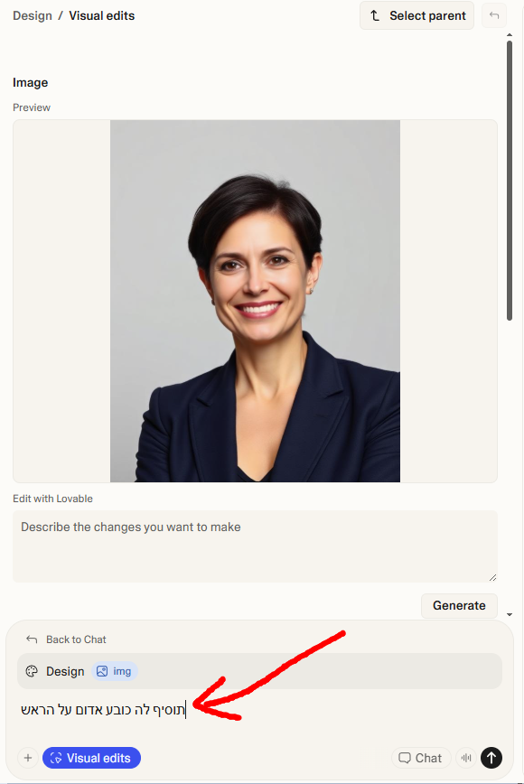
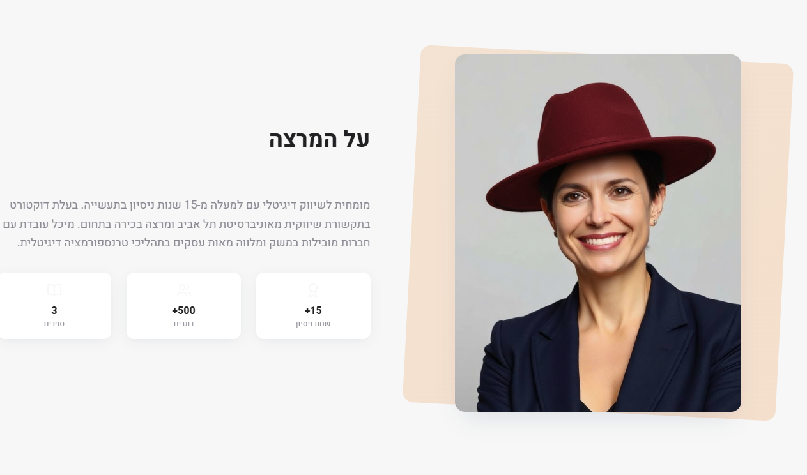
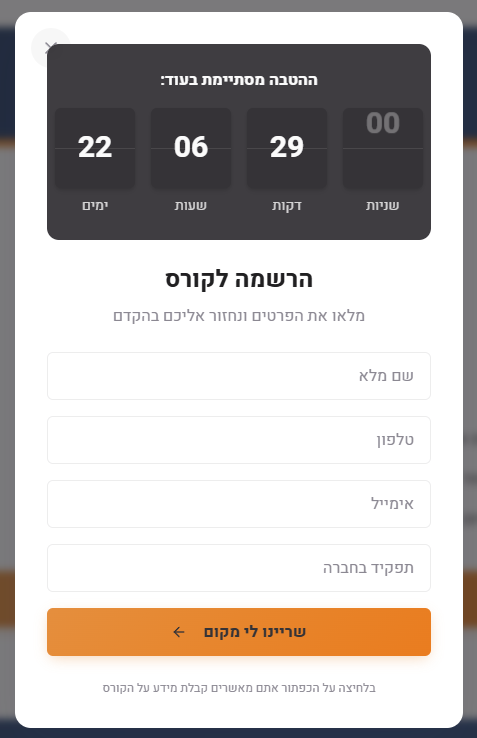

משימה 1: הוספת לוגו 🏷️
הלוגו הוא הדבר הראשון שהמבקר רואה - חשוב שיהיה במקום בולט.
איך עושים את זה:
אפשרות א' - העלאה ישירה:
- גררו את קובץ הלוגו (PNG/SVG) ישירות לצ'אט של Lovable
- כתבו פרומפט שמסביר איפה לשים אותו
פרומפט לדוגמא:
הוסף את הלוגו שהעלתי לפינה הימנית העליונה של הדף, בגודל 120 פיקסל רוחב
אפשרות ב' - קישור חיצוני:
אם הלוגו כבר נמצא באתר שלכם, השתמשו בקישור
פרומפט לדוגמא:
הוסף את הלוגו מהכתובת הזו: https://mysite.com/logo.png
למיקום Header בצד ימין
משימה 2: הוספת תמונות מוצר 📸
תמונות איכותיות של המוצר או השירות מגבירות אמון ומעורבות.
איך עושים את זה:
אפשרות א' - העלאה ישירה:
גררו תמונות לצ'אט והסבירו איפה למקם אותן
פרומפט לדוגמא:
הוסף את התמונה שהעלתי לסקשן Hero מצד שמאל, עם פינות מעוגלות וצל עדין
אפשרות ב' - תמונות מ-Unsplash:
מצאו תמונה מתאימה ב-unsplash.com והעתיקו את הקישור
פרומפט לדוגמא:
הוסף תמונה מהקישור הזה: https://unsplash.com/photos/xxxxx
לסקשן "אודות" ברקע עם שקיפות 50%
אפשרות ג' - יצירת תמונה עם AI:
- ב-Design View אפשר ליצור תמונות עם AI!
- לחצו על תמונה קיימת ובחרו "Edit with Lovable"
- תארו מה אתם רוצים לראות
💡 איך זה נראה:
שלב 1: לחצו על תמונה בעורך → בחרו "Edit with Lovable" → תארו את השינויים שאתם רוצים
שלב 2: התוצאה - הדף עם התמונה החדשה שנוצרה לפי הפרומפט שלכם
משימה 3: הוספת אייקונים לסקשן יתרונות 🎯
אייקונים עוזרים להעביר מסר במבט מהיר ומשדרגים את המראה.
איך עושים את זה:
Lovable משתמש בספריית Lucide Icons - אוסף של מאות אייקונים חינמיים.
פרומפט לדוגמא:
בסקשן היתרונות, הוסף אייקונים מ-Lucide לכל יתרון:
- ליתרון הראשון (מהירות) - אייקון Zap
- ליתרון השני (תמיכה) - אייקון Headphones
- ליתרון השלישי (אבטחה) - אייקון Shield
הצבע של האייקונים יהיה הצבע הראשי של המותג
משימה 4: הטמעת סרטון 🎬
סרטון יכול להסביר את המוצר טוב יותר מאלף מילים.
איך עושים את זה:
אפשרות א' - סרטון מיוטיוב (מומלץ):
הדרך הכי פשוטה והמהירה - פשוט העתיקו קישור מיוטיוב
פרומפט לדוגמא:
הטמע את הסרטון הזה מיוטיוב בסקשן Hero:
https://www.youtube.com/watch?v=XXXX
הסרטון יהיה ברוחב 100% עם יחס 16:9
אפשרות ב' - העלאת סרטון ישירות:
אם יש לכם קובץ MP4 משלכם:
- גררו את קובץ ה-MP4 ישירות לצ'אט של Lovable
- הסבירו איפה אתם רוצים להציג אותו
פרומפט לדוגמא:
הוסף את הסרטון שהעלתי לסקשן ההקדמה
עם כפתור Play במרכז ותמונת תצוגה מקדימה
משימה 5: הוספת שעון ספירה לאחור ⏰
יוצר תחושת דחיפות ומעודד פעולה מהירה.
פרומפט לדוגמא:
הוסף שעון ספירה לאחור מעל טופס ההרשמה
שסופר לאחור עד התאריך 31.12.2025
עם הכיתוב "ההטבה מסתיימת בעוד:"
הצג ימים, שעות, דקות ושניות
בעיצוב מודרני עם רקע כהה וטקסט בהיר
השתמש באנימציה כשהמספרים משתנים כדי שזה ייראה מעניין
💡 איך זה נראה:
דוגמא לשעון ספירה לאחור מעוצב - הצג ימים, שעות, דקות ושניות בעיצוב מודרני
משימה 6: הוספת אנימציות בגלילה ✨
אנימציות עדינות משדרגות את חווית המשתמש ומרגישות מקצועיות.
פרומפט לדוגמא:
הוסף אנימציות fade-in לאלמנטים בדף:
- כשגוללים לסקשן, הוא יופיע בהדרגה מלמטה
- הכרטיסיות יופיעו אחת אחרי השנייה עם דיליי קל
- הכפתורים יקבלו אפקט hover עם הגדלה קלה
השתמש באנימציות עדינות ומהירות (300ms)
משימה 7: הוספת גלריית תמונות 🖼️
מושלם להצגת מוצרים, פרויקטים, או לפני/אחרי.
פרומפט לדוגמא:
צור גלריית תמונות בסקשן "העבודות שלנו":
- 6 תמונות בגריד של 3 עמודות (2 שורות)
- במובייל - עמודה אחת
- לחיצה על תמונה פותחת אותה בחלון מוגדל (lightbox)
- עם חיצים לניווט בין התמונות
אחרי שנוצרה הגלריה:
- העלו תמונות לצ'אט
- בקשו מ-Lovable להחליף את תמונות ברירת המחדל
משימה 8: הוספת תמונות לקוחות להמלצות 👤
תמונות אמיתיות של לקוחות מגבירות אמינות.
פרומפט לדוגמא:
בסקשן ההמלצות, הוסף לכל המלצה:
- תמונה עגולה של הלקוח (60x60 פיקסל)
- שם הלקוח מתחת לתמונה
- תפקיד וחברה בצבע אפור בהיר
אם אין תמונה, הצג אות ראשונה של השם על רקע צבעוני
משימה 9: הוספת רקע מעוצב 🎨
רקעים יכולים להפוך סקשן רגיל למרשים.
פרומפט לדוגמא:
עדכן את הרקעים בדף:
- Hero: רקע גרדיאנט מהצבע הראשי לצבע המשני
- סקשן יתרונות: רקע אפור בהיר (#f8f9fa)
- סקשן CTA: רקע הצבע הראשי עם טקסט לבן
- הוסף צורות דקורטיביות עדינות ברקע (עיגולים/גלים)
💡 טיפים חשובים
📌 אופטימיזציה לתמונות: תמיד דחסו תמונות לפני העלאה. תמונות כבדות מאטות את הדף
📌 AI Image Generation: ב-Design View לחצו על תמונה ובחרו Edit with AI ליצירת תמונות מותאמות
📌 Visual Edits: הרבה שינויים ויזואליים אפשר לעשות ישירות ב-Design View בלי פרומפט
📌 מובייל: תמיד בדקו איך האלמנטים נראים במובייל אחרי הוספתם
📌 פחות זה יותר: אל תעמיסו יותר מדי - שמרו על עיצוב נקי ומקצועי
✅ רשימת בדיקה לפני סיום
- לוגו מופיע בבירור בראש הדף
- תמונות איכותיות של המוצר/שירות
- אייקונים בסקשן היתרונות
- סרטון (אם רלוונטי)
- אנימציות עדינות בגלילה
- כל האלמנטים נראים טוב במובייל
- הדף נטען מהר (תמונות דחוסות)